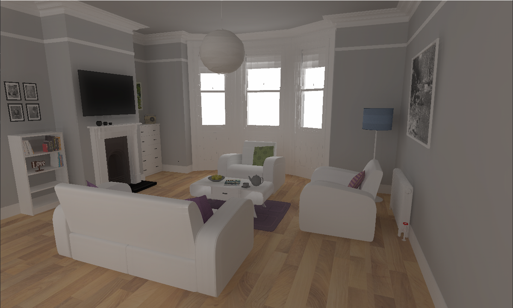
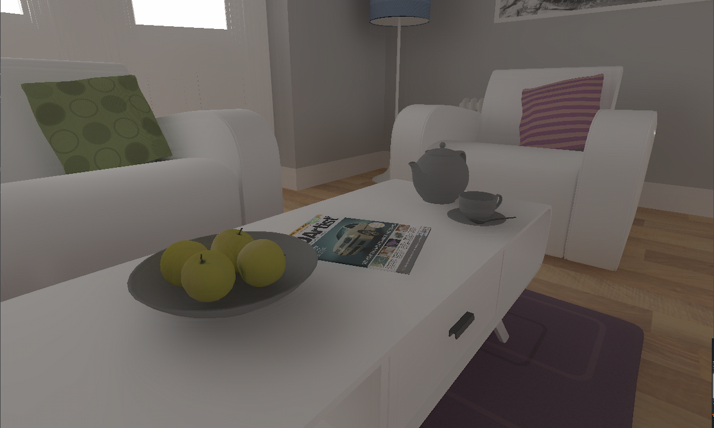
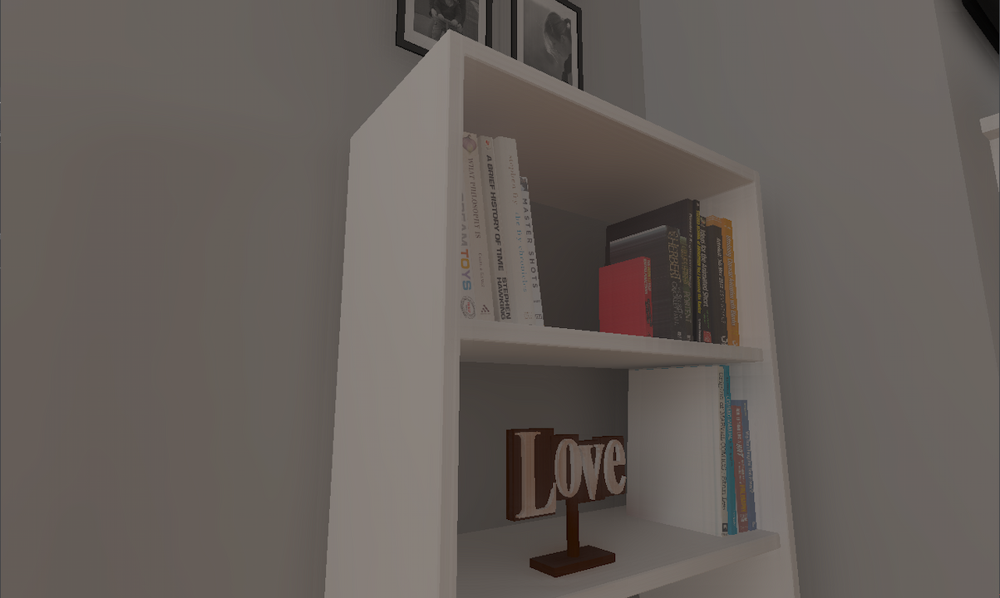

During my Redmond exchange, I took a deep dive into the world of ray tracing by completing a module and developing a simple ray tracer using the Vulkan API. This project gave me a thorough understanding of ray tracing fundamentals and allowed me to build intuition for the Monte Carlo method of lighting calculation. I also gained practical experience working with shader binding tables, TLAS, and BLAS, as well as real-time raytracing concepts that are crucial to the advancement of computer graphics.
Prior to joining Digipen, I was thrilled to hear about the announcement of hardware ray tracing with the release of Nvidia's RTX20 series graphics cards. I promptly purchased a compatible laptop and was excited to have the opportunity to run hardware ray tracing on it. This project was a step towards fulfilling my passion for computer graphics and my commitment to continuous learning and improving my skills in the field.
Technical:
Check out the code here.